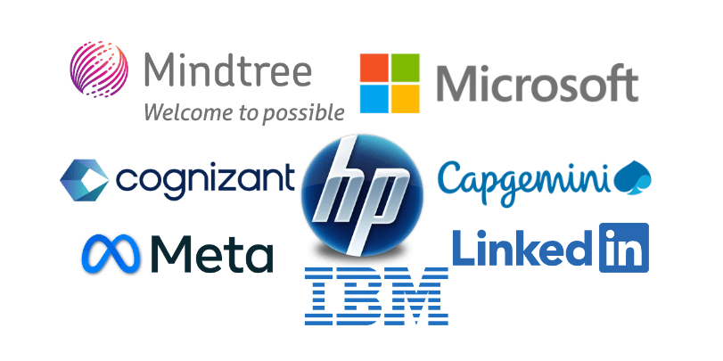

1. Google
Website: www.google.com
Location: Bagmane Tech Park, Bangalore
Services: Search, cloud (GCP), Android, AI/ML
Career Information: Google careers — highly competitive engineering roles
Bangalore (Bengaluru) is known as the Silicon Valley of India.

IT multinational companies in Bangalore with location, services, and career details.
Bangalore is India's largest technology ecosystem, home to global product companies, R&D centers, and massive IT service operations across areas like Whitefield, Electronic City, Outer Ring Road, and Manyata Tech Park.
Website: www.google.com
Location: Bagmane Tech Park, Bangalore
Services: Search, cloud (GCP), Android, AI/ML
Career Information: Google careers — highly competitive engineering roles
Website: www.microsoft.com
Location: Outer Ring Road, Bangalore
Services: Azure, Office 365, Windows, enterprise software
Career Information: Microsoft careers — R&D and cloud engineering roles
Website: www.amazon.com
Location: Manyata Tech Park, Bangalore
Services: E-commerce, AWS cloud, Alexa, logistics tech
Career Information: Amazon jobs — SDE and operations roles
Website: www.ibm.com
Location: Manyata Tech Park, Bangalore
Services: Cloud, Watson AI, enterprise solutions
Career Information: IBM India careers for developers and consultants
Website: www.infosys.com
Location: Electronic City, Bangalore
Services: IT consulting, digital services, outsourcing
Career Information: Large campus hiring and lateral recruitment
Website: www.wipro.com
Location: Sarjapur Road, Bangalore
Services: IT services, digital, cloud, BPO
Career Information: Wipro careers — multiple domains and skill levels
Website: www.intel.com
Location: Outer Ring Road, Bangalore
Services: Semiconductor design, hardware, software
Career Information: Intel careers — VLSI and software engineering
Website: www.sap.com
Location: Whitefield, Bangalore
Services: Enterprise ERP, business software, analytics
Career Information: SAP careers — product development roles
Website: www.oracle.com
Location: Outer Ring Road, Bangalore
Services: Database, cloud infrastructure, enterprise apps
Career Information: Oracle careers — database and cloud engineers
Website: www.accenture.com
Location: Hebbal, Bangalore
Services: Consulting, technology services, outsourcing
Career Information: Accenture careers — consulting and tech roles